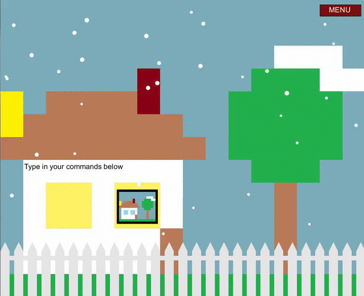

An basic House Project by Jeffrey Shi
In this project, we created a house in Microsoft Paint. We then created instructions in hopes that a classmate could recreate the house given those instructions. For many of us, this venture resulted in a disappointing failure. For some of us, however, we were successful and received the praise of Mr. Gohde for creating such accurate descriptions and following the instructions perfectly. I, however, was not of the latter group. After recovering from the great depression that suffered from this massive failure, I moved on and recreated the project and animated it on Processing. This solo endeavor proved to be far more successful than the last. Anyway, this website is organized into 3 sections: Static House, Dynamic House, and Reflection. You can navigate the website by using the menu above.
